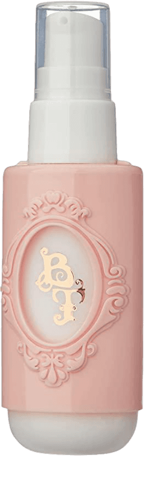

Preparação de pele
1. Escolha os produtos certos para sua pele.
Você deve conhecer qual é o seu tipo de pele e investir nos cosméticos adequados. Atente-se
às características e
necessidades que predominam na derme, pois é a partir disso que será possível saber os componentes que um
produto precisa ter para proporcionar resultados satisfatórios e não causar alergias ou
irritações.
Se a sua pele é oleosa, opte por cremes livres de óleo e que apresentem zinco e ácido salicílico na
composição.
Caso seja seca, dê preferência às alternativas com vitamina E, C e outros ativos hidratantes.
.jpg)
Nesse passo, utiliza os seguintes produtos:
| Sabonete | Hidratante | Sérum |
|---|---|---|
.png) |
 |
Esses são os principais produtos para cuidar da sua pele antes da maquiagem. Foque no básico e acerte nos produtos adequados para você.
Esses passos são importantes para garantir um visual mais duradouro, um acabamento melhor e mais uniforme me sua pele. Essa preparação vai deixar sua pele muito mais bem cuidada e protegida. Além disso, ao deixar o skincare em dia antes de aplicar base, corretivo, blush e tudo que tem direito, você evita o acúmulo de produtos nos poros e que a pele não fique ressecada depois. Isso é essencial para quem costuma passar maquiagem todo dia e fica várias horas com ela.
Produtos básicos:
- Sabonete Facial
- Hidratante Facial
- Sérum
- Protetor Solar